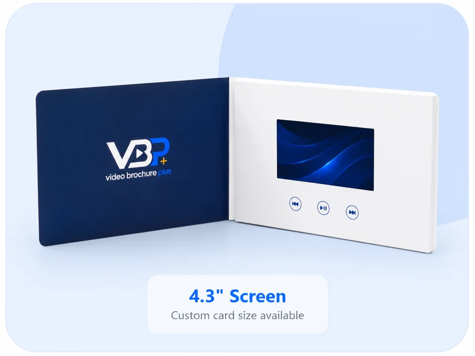

Standard sample
Useful for checking a representative screen, playback, audio, buttons, charging and common cover construction before artwork is final.
A sample reduces project risk by letting the buyer inspect the screen, printing, construction, playback, controls, charging and packaging before mass production.

Use a standard sample to evaluate general workmanship and a custom prototype to approve your project-specific design. Availability, charges and timing should be confirmed against the requested screen, construction and artwork.
Useful for checking a representative screen, playback, audio, buttons, charging and common cover construction before artwork is final.
Produced around the agreed project specification and artwork so the buyer can approve visual and functional details.
The approved specification should identify which sample details become the production standard and which items remain subject to written confirmation.
| Area | What to inspect | What to record |
|---|---|---|
| Color, registration, finish, text and image placement | Approved artwork version and any color references | |
| Construction | Finished size, folds, cover, edges, hinge and closure | Dimensions and material/finish description |
| Screen | Display, viewing angle, brightness and fit in the card | Screen size and agreed component specification |
| Playback | Auto-play behavior, video order, looping and resume behavior | Approved files and playback instructions |
| Controls | Buttons, labels, volume and navigation | Button layout and function map |
| Power | Charging port, cable, battery behavior and shutdown | Interface and test notes |
| Packaging | Individual protection, fit and opening sequence | Packaging specification and carton needs |
Check print color, dimensions, cover construction, screen playback, audio, buttons, charging, video loading and packaging against the approved specification.
No. A standard sample demonstrates typical workmanship; a custom prototype is produced around the buyer's artwork and agreed configuration.
The safest process is to document and approve the agreed sample or specification before mass production. If timing requires another approach, the approval boundaries should be confirmed in writing.
Provide the product type, screen preference, quantity, use case, destination, deadline and current artwork/video status.
Tell us whether you are comparing general quality or approving a specific project. We will confirm available options for your specification.
Discuss sample options